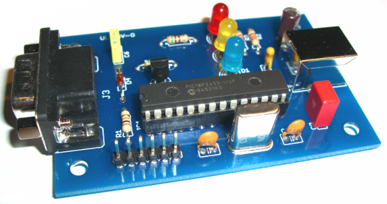

A weblog focused on interesting circuits, ideas, schematics and other information about microelectronics and microcontrollers.
E-books
Disclaimer
Because I have not tested all electronic circuits mentioned on this pages, I cannot attest to their accuracy; therefore, I do not provide a warranty of any kind and cannot be held responsible in any manner.
USB
Direct connecting: AVR to USB, no HW converters
5. July 2008 - 12:08 — adminSome techniques to connect AVR-based device to USB without a specialized HW, just only in the SW way.
USB AVR programmer
12. June 2008 - 17:35 — adminIn-system programmer for a lot of AVR microcontrollers
USB OBD2 adapter
29. May 2008 - 14:04 — adminThis project was begun as a response to build simple ISO9141-2/14230-4 ELM323 compatible USB adapter for On Board Diagnostic (OBD2) monitoring.

WinUSB - USB library for PICs from Jan Axelson
14. May 2008 - 12:22 — adminWinUSB a generic driver for devices that don't fit a defined USB class. The driver was introduced with Windows Vista and is also usable on Windows XP systems. The driver is not usable on earlier Windows editions. The driver supports control, bulk, and interrupt transfers.
WinUSB is a .NET host application for accessing devices that use the WinUSB driver. Each includes an example INF file to match the device's Vendor ID and Product ID to a device interface GUID. There are two variants - VB.NET and C#
LCD to USB
10. May 2008 - 9:59 — adminThe goal of LCD2USB is to connect HD44780 based text LCD displays to various PCs via USB.
Software-driven USB interface for AVR
28. April 2008 - 11:29 — adminHow to connect an AVR microcontroller directly to USB without any converter chips?
USBTiny - ATtiny2313 based USB-to-parallel convertor
27. April 2008 - 13:02 — adminUSBtiny is a software implementation of the USB low-speed protocol for the Atmel ATtiny microcontrollers.